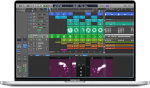

Hobbyist / Producer / Dreamer
Greetings! This space exist to share my creations with everyone, since I was young I've been a listener of electronic and psychedelic music and now I try to make my own sounds. I look for perfection and I am always learning more. I am from Portugal and I was born in 1987, I hope you like my creations.
This is my midi keyboard the Akai MPK Mini MK3.
This is my monitoring system the Yamaha HS5.
This is my digital audio workstation Macbook Pro and Logic Pro.